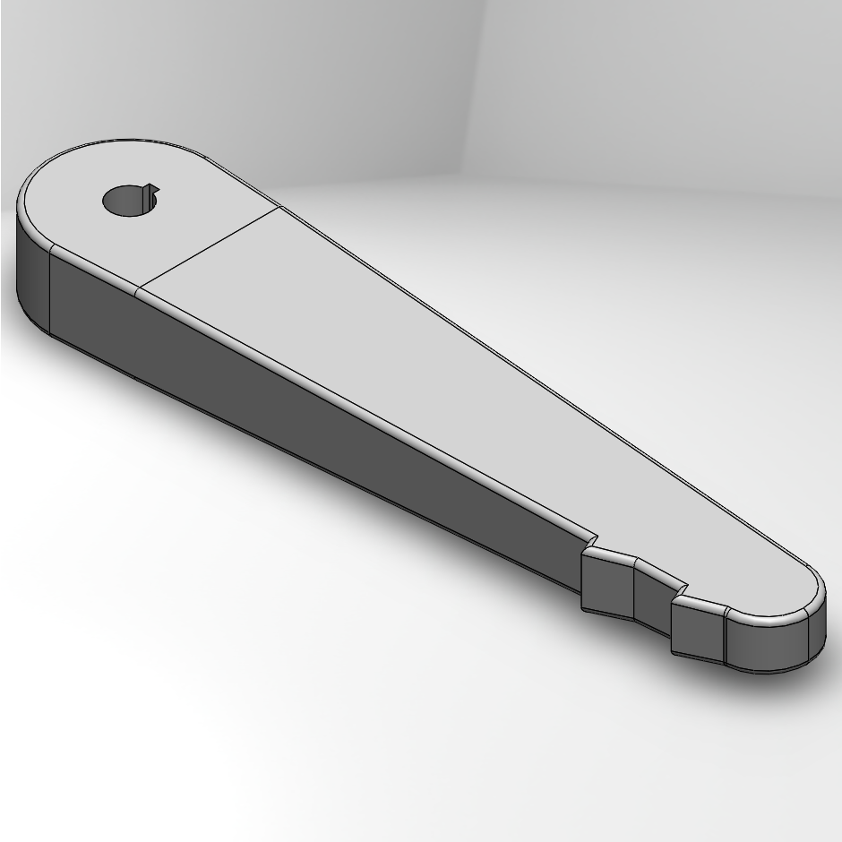

Robotic Flipper (Semester 2, 2020)
Cut short by COVID, this project was going to be a flipper for my school's team robot. It facilitates going over bumps, stairs, and other uneven terrain. If the shutdown didn't happen, my partner and I would have finished this, complete with independently spinning treads and about 150 degree rotation.
The robot, its flippers, the team, and I would have competed at RoboCup Bordeaux, but travel had to be cancelled. I hope we are able to make it this coming summer.
What is a Flipper?
A flipper is an appendage on the ends of a tread-based robot. It rotates up and down to force the robot over bumps. On our robot, because the treads already weren't keyed into the axels on either end, my partner and I planned on keying the flippers into the axel so that if the axel rotated, so would the flippers. We would also add onto the existing tread sprockets for the flipper treads to attach to so that all treads rotated at the same pace.
The Process
Below, you can see all of the versions mentioned. We started with Solidworks designs. There was a competing senior team already on the project, so we needed to do something to differentiate our work from theirs. They had a flat plate so that the sprockets and treads were attached on one side, so we designed a plate where the sprockets would attach at a different side on each end. We did this in an attempt to reduce anticipated flexing in the competing design.
I constructed a wooden prototype while my partner worked on joints to put together the pieces for a printed version. We then made sure that the sprockets fit on the prototype before printing the next version. Then as we designed sprocket extensions, COVID hit. We had to stop production.
During online school, I couldn't stop thinking of ways to improve the design from home, so I downloaded Solidworks at home and made the last image, which is a simpler, treadless flipper.